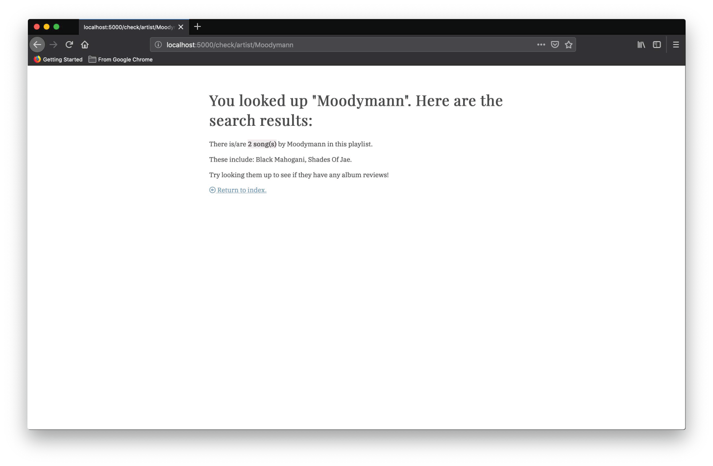
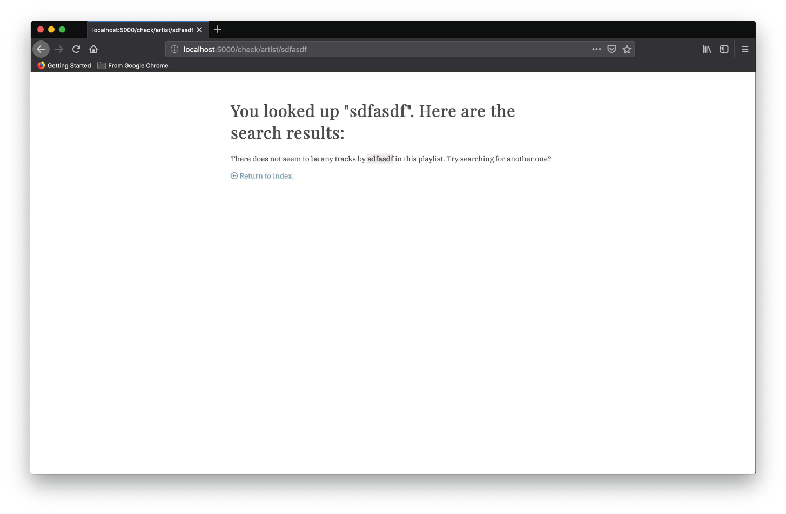
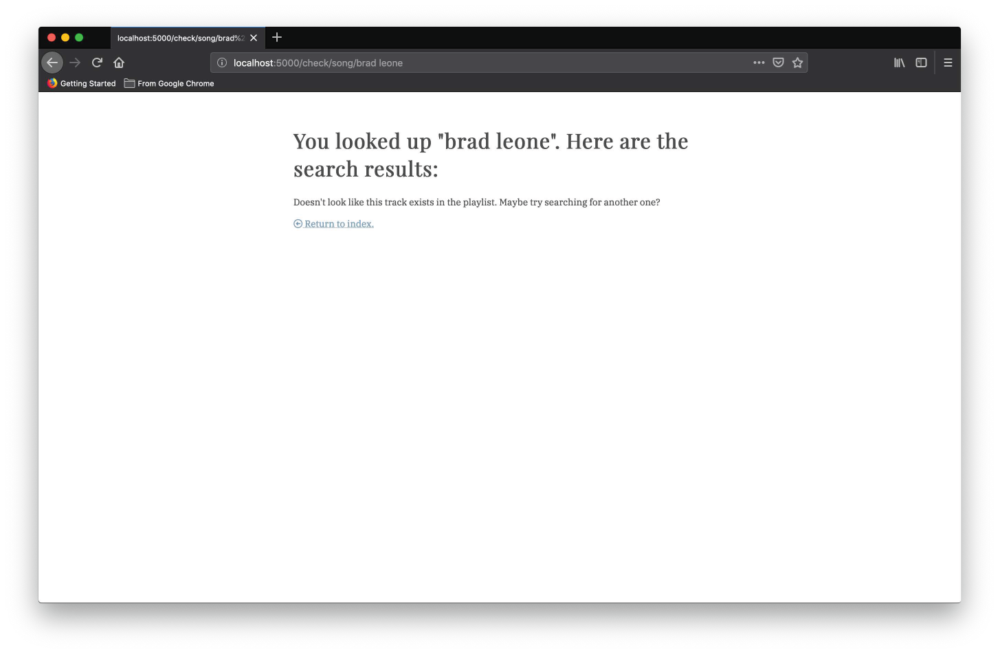

Python App: Pitchfork Album Reviews
Role: UI/UX Designer, Developer
Using Python, Flask, SQLAlchemy, Spotipy, and Spotify's API
This project requests data about Caribou's playlist, The Longest Mixtape: 1000 Songs for You, from Spotify, via their API, and stores those tracks in a database using SQLAlchemy.
Users will be able to check to see if certain songs or artists are in that playlist by entering a title or artist name as part of a Flask route: if a song is in the playlist, the application will also return Pitchfork’s rating of the album the song is present on, if available; If an artist is in the playlist, the application will return the song(s) present by the artist.
This program was developed as a final project for a master's course (SI 507: Intermediate Python Programming).Link to this repository on GitHub: here
Application Screenshots
The following are examples of the program running through various pathways provided by the user.
Route 1
/ → shows you a greeting + gives instructions on how to user should enter information
Route 2:
/check/song/<trackname> → checks if a certain track exists in the database/playlist
Route 3:
/check/artist/<artistname> → checks if tracks by a given artist exist in the database/playlist
Error messages:
To provide error prevention/recovery in the case that incorrect or unusable information is provided.
 Future considerations
I'd love to create a version of this script that reversed the general process: a user could search a track title and a list of the user's playlists (owned or followed) containing that track would be returned. I have many playlists and loose track of where I added certain songs :)